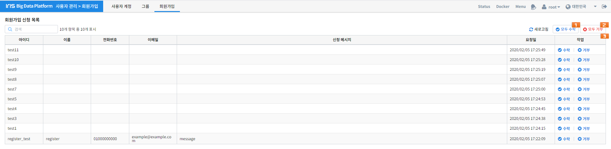

회원가입¶
IRIS에 회원가입을 신청한 사용자를 관리하기 위한 기능입니다. 회원가입 허가는 super user(일반적으로 root 계정)만 가능합니다.
번호 |
구분 |
설명 |
|
|---|---|---|---|
1 |
모두 수락 |
가입을 신청한 사용자들을 모두 수락합니다. |
|
2 |
모두 거절 |
가입을 신청한 사용자들을 모두 거절합니다. |
|
3 |
회원가입 목록 |
이름 |
회원가입을 신청한 사용자의 이름 |
전화 번호 |
회원가입을 신청한 사용자의 전화번호 |
||
이메일 |
회원가입을 신청한 사용자의 이메일 |
||
신청 메시지 |
회원가입을 신청한 사용자의 신청 메시지 |
||
요청일 |
사용자의 회원가입 요청일 |
||
작업 |
회원가입을 신청한 사용자에 대한 수락 / 거절 |
||